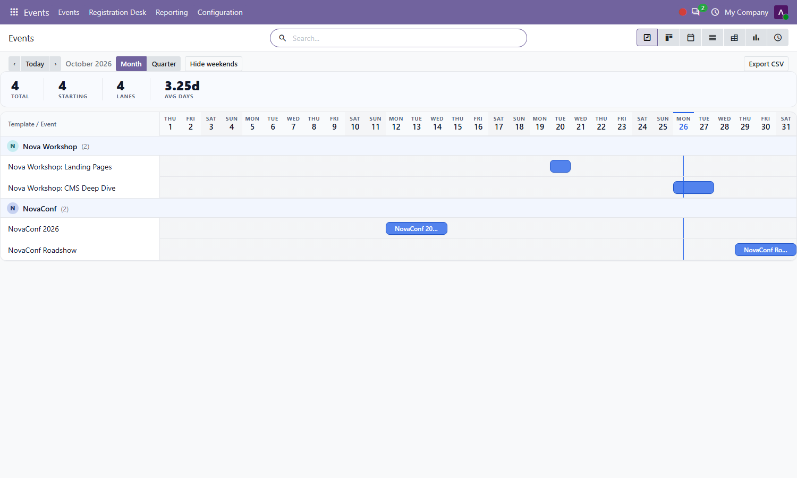
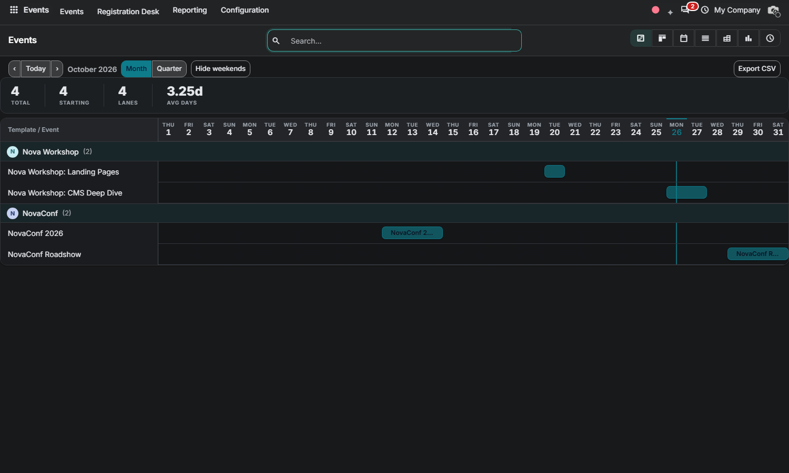

Free Odoo 20.0 Community • By Zeetavix
Nova Event Gantt brings the Enterprise-style timeline to Community events — rebuilt from scratch: sections by event template, one lane per event, bars from begin to end. Drag to reschedule with the time-of-day preserved, stretch to extend, and keep every event honest.
Click and drag any bar to move it; grab its edges to resize. Dates snap to days while the event's time-of-day is preserved. Click a bar to open it.

The timeline follows your backend theme: elevated header band, dimmed weekends, a crisp today line and a theme-aware accent.

Nova Gantt (bundled engine, auto-installed dependency) • event
By Zeetavix — https://zeetavix.com